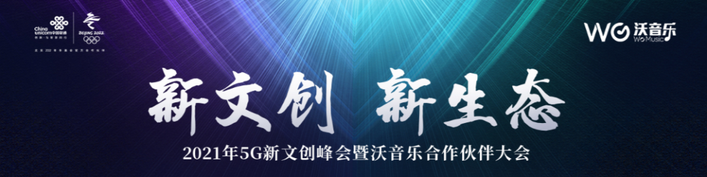
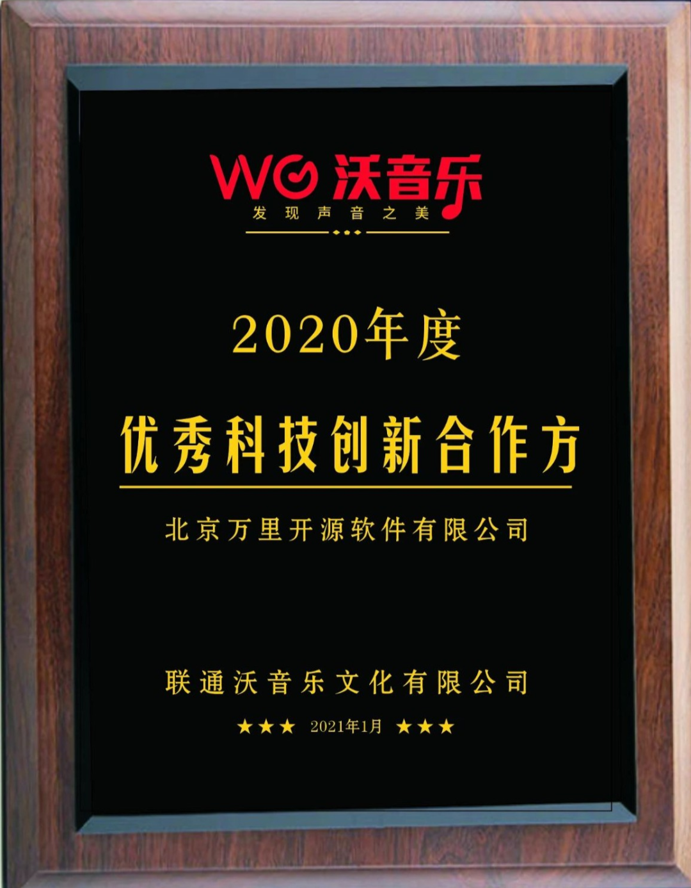

万里数据库又双叒叕获大奖

1月29日，以 “新文创 新生态” 为主题的2021年5G新文创峰会暨沃音乐合作伙伴大会在线上举行，万里数据库、华为、科大讯飞等行业头部企业受邀出席盛会，共同探讨2021年5G新文创合作策略与行业未来发展趋势。会上，联通沃音乐为优秀的合作伙伴颁奖，万里数据库荣获 “2020年度优秀科技创新合作方” 奖。

5G大潮袭来，大数据、人工智能、超高清音视频、融合通信革新等风口已至，如何创造多元化的新文创复合生态下文化价值和产业价值，将是未来思考和探索的主题。基础软件作为底层的核心技术，是实现新文创生态体系价值的重要支柱产业。
国家领导人在《国家中长期经济社会发展战略若干重大问题》 指出，要优化和稳定产业链、供应链，在关系国家安全的领域和节点构建自主可控、安全可靠的国内生产供应体系。
数据库作为基础软件“皇冠” 上明珠、 国产化产业中的核心一环， 在整个产业和技术上，占有重要的基础地位。国产数据库的产业链、供应链绝对不能在关键时刻掉链子。
目前，万里数据库已与联通沃音乐联合成立了“海纳数据智能联合研发实验室”，致力于打造一套从底层数据库到上层数据应用的综合一站式服务数据智能产品体系——海纳uniBase。海纳uniBase以海纳数据库为底层支撑，通过大数据仓库、实时计算平台进行高效数据管理，最终形成数据建模、效果监测等上层数据应用，为企业数字化转型赋能。
本次万里数据库荣获联通沃音乐“2020年度优秀科技创新合作方”奖，既是联通沃音乐对双方过去一年合作的高度肯定，也体现了联通沃音乐增强产业链供应链自主可控能力的重大决心，有助于核心技术的创新与发展。
未来，万里数据库将与联通沃音乐一起，充分发挥各自优势，把万里数据库技术融合到沃音乐的AI、视频和安全技术，努力打造最好用的国产数据库，以及最适合业务生产的数据智能产品体系，成为国产数据库行业的创新引领者。
推荐阅读1. 万里数据库与联通在线沃音乐携手 共建海纳数据智能联合研发实验室
2. 生态|万里数据库成为光合组织金融科技委员会首批成员单位
3. 万里开源与联通沃音乐完成“云签约”，共建5G数据智能技术服务平台
万里数据库简介
万里数据库是北京万里开源软件有限公司自主研发的新一代分布式数据库，经过10余年的应用验证，在功能、性能、稳定性、易用性等方面均处于行业领先水平，历经500多个业务场景的锤炼，已广泛应用于金融、能源、通信、政府、交通等多个行业。


扫码二维码
关注公众号